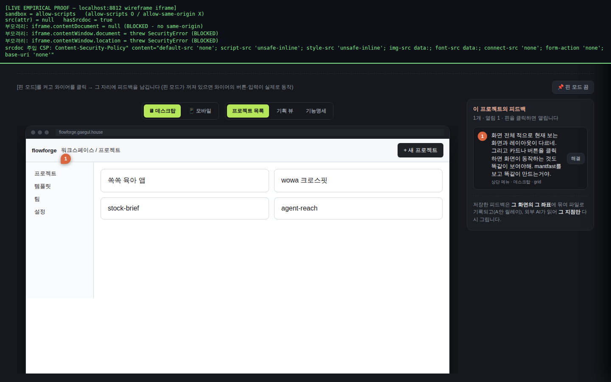
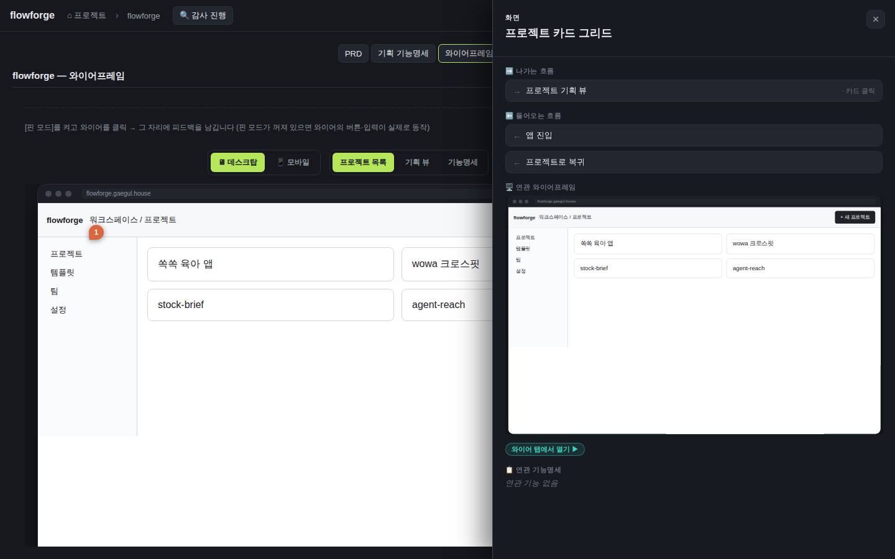
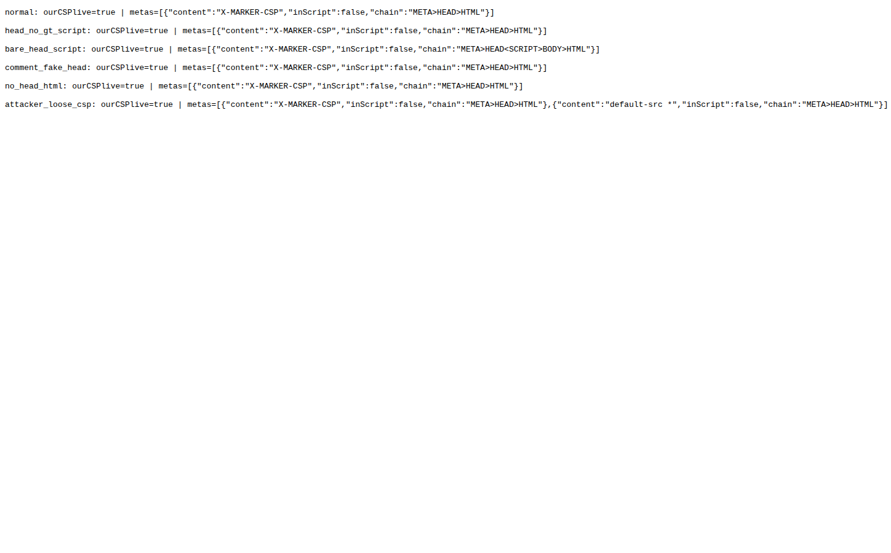
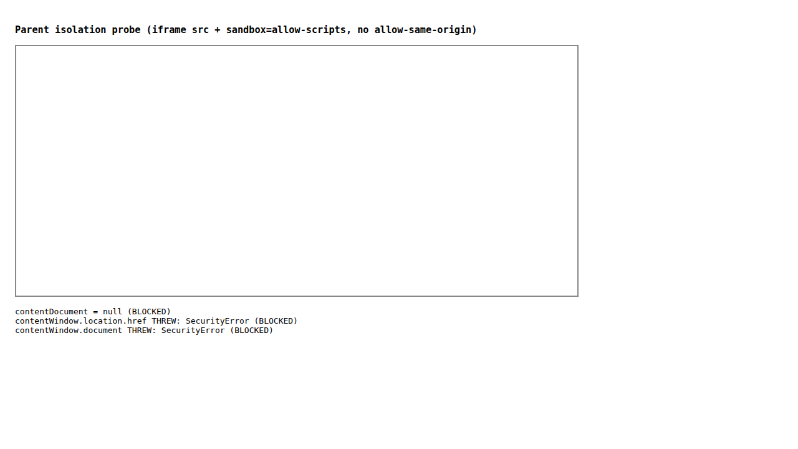

검증일: 2026-07-12T17:15:00+09:00 · 환경: server=jest 545/545 PASS(신규 docsWireDoc·wirePreview 포함) · web=vitest 13/13 PASS · typecheck EXIT 0 · shared build EXIT 0 · 라이브 재배포 localhost:8812(ea07495 반영) HTTP 200 · browse(gstack) 부모격리 실측 · run: run-20260712-1715 · commit 5bbdbbd3 (dirty)
PASS 25 · FAIL 0 · 검증 안 함 0 · SKIPPED 0
| Requirement | Scenario | Layer | 검증 수단 | 탐지 근거(basis) | 결과 | 증거 |
|---|---|---|---|---|---|---|
| [contract] harness가 화면별 HTML 문서를 생성해 flowforge에 전달한다 | 원천 3종에서 화면별 HTML 생성 — WHEN 기능명세·유저플로우·화면목록이 있는 프로젝트에서 스킬이 와이어 생성 THEN 각 화면에 id·title·device·html을 담은 화면 항목이 만들어진다 | server | 생성 로직은 flowforge 밖(스킬) — flowforge 측은 산출 계약을 검증: planningWireframeFixture.test.ts '각 화면은 id·title·device·html(문서 문자열)을 담는다' + wireDocs.test.ts isValidWireDoc(정상 문서 통과). jest PASS. | jest server 41 suites/528 PASS; planningWireframeFixture.test.ts 6 assertions | ✓ PASS | planningWireframeFixture.test.ts: '각 화면은 id·title·device·html(문서 문자열)을 담는다(좌표 없는 요소 배열 아님)' ✓, 'html은 실제 마크업이다(<html>/<body> 문서 구조)' ✓; wireDocs.test.ts isValidWireDoc '정상 문서는 통과한다(id·title·device·html)' ✓ — 생성 주체는 스킬이므로 flowforge는 계약 스키마만 검증(TDD Plan 명시). |
| [contract] harness가 화면별 HTML 문서를 생성해 flowforge에 전달한다 | 화면 id는 화면목록과 정합한다 — WHEN 생성된 화면 id 검사 THEN 화면목록/유저플로우/IA의 화면 id와 공유되어 정합 | server | planningWireframeFixture.test.ts '화면 id는 화면목록 규약과 공유된다(grid·skeleton·features + 모바일 grid-m·skeleton-m)' — 픽스처 화면 id가 화면목록 규약 id와 정합. jest PASS. | jest planningWireframeFixture.test.ts | ✓ PASS | planningWireframeFixture.test.ts: '화면 id는 화면목록 규약과 공유된다(grid·skeleton·features + 모바일 grid-m·skeleton-m)' ✓. appendWireframeFeedback도 '현재 와이어에 없는 화면 id면 거부' ✓로 id 정합을 런타임 강제. |
| [contract] harness가 화면별 HTML 문서를 생성해 flowforge에 전달한다 | 생성 주체는 flowforge 밖 — WHEN flowforge 서버 코드 검사 THEN 서버에 LLM/생성 호출 없고 와이어 원천은 스킬이 전달한 HTML 문서 | server | static grep: server/src/lib/wireDocs.ts·planningWireframeFixture.ts 에 openai/anthropic/claude/llm/generate-wire fetch 호출 부재(주석 제외 0건). 원천은 승인분 JSON(readApprovedWireframe) ?? 픽스처. | grep -rniE 'openai|anthropic|claude|llm|generate.*wire|fetch.*api.(openai|anthropic)' server/src → 코드 매치 0 | ✓ PASS | grep(server/src/lib/wireDocs.ts, planningWireframeFixture.ts): LLM/생성 호출 코드 0건. buildDocsPlanningWireframe2 = readApprovedWireframe(docsDir) ?? PLANNING_WIREFRAME_FIXTURE (wireDocs.ts:250) — 서버는 스킬 산출 HTML만 read(읽기 거울 원칙). |
| [contract] 전달되는 HTML 문서는 자족적이고 sandbox 제약을 만족한다 | 자산은 인라인 임베드 — WHEN 전달된 HTML 문서의 자산 참조 검사 THEN CSS/JS/이미지가 인라인/data URI, 외부 CDN/호스트 의존 없음(외부는 CSP로 차단) | server | planningWireframeFixture.test.ts 'html은 자족적이다 — 외부 호스트(http(s)://) 자산 참조가 없다(CSP가 외부 로드 차단)'. + 문서 CSP(WIRE_DOC_CSP) img-src data:/font-src data:/default-src 'none'로 외부 로드 원천 차단. | jest planningWireframeFixture.test.ts + wire-security.ts WIRE_DOC_CSP | ✓ PASS | planningWireframeFixture.test.ts: 'html은 자족적이다 — 외부 호스트(http(s)://) 자산 참조가 없다' ✓. 라이브 iframe srcdoc CSP 실측: "default-src 'none'; script-src 'unsafe-inline'; style-src 'unsafe-inline'; img-src data:; font-src data:; connect-src 'none'" — 외부 host 소스 미허용, 인라인/data만. |
| [contract] 전달되는 HTML 문서는 자족적이고 sandbox 제약을 만족한다 | 문서는 부모 접근을 전제하지 않는다 — WHEN 문서 스크립트 검사 THEN window.parent·top-nav·부모 오리진 통신에 의존하지 않고 iframe 안 자족 동작 | web | 라이브 실측: sandbox=allow-scripts(allow-same-origin 없음)라 부모 접근은 물리적으로 거부됨. 부모→iframe.contentDocument/contentWindow 접근이 TypeError로 throw(cross-origin 경계 확립). 문서는 격리 안에서만 동작. | browse js on localhost:8812 wireframe 탭: f.contentDocument→'threw: TypeError', f.contentWindow→'threw TypeError' | ✓ PASS |  |
| [contract] 전달되는 HTML 문서는 자족적이고 sandbox 제약을 만족한다 | 제약 위반 문서 안전 처리 — WHEN 전달 문서가 계약(자족성·id정합) 위반/손상 THEN flowforge는 격리 유지한 채 안전 폴백/거부, 렌더 안 죽음 | server | wireDocs.test.ts: '승인분 JSON이 깨졌으면 픽스처로 안전 폴백(throw 금지)', '스키마 위반 항목은 필터하고 유효분만 반환'. isValidWireDoc 필터 + readApprovedWireframe null→픽스처 폴백. 격리(sandbox)는 문서 내용 무관 항상 유지. | jest wireDocs.test.ts (readApprovedWireframe 폴백 + isValidWireSuggestion 필터) | ✓ PASS | wireDocs.test.ts: '승인분 JSON이 깨졌으면 픽스처로 안전 폴백(throw 금지)' ✓, '스키마 위반 항목은 필터하고 유효분만 반환' ✓, '깨진 JSON이면 빈 큐를 반환한다(throw 금지)' ✓. readApprovedWireframe: try/catch → null → 픽스처(wireDocs.ts:130-140). 렌더 경로는 문서가 뭐든 sandbox iframe 고정. |
| [render] 와이어는 화면별 HTML 문서를 iframe에 렌더한다 | 화면별 HTML을 iframe에 표시 — WHEN 와이어 화면 하나(HTML 문서)를 렌더 THEN HTML 문서가 iframe 안에 표시되고 회색 박스 근사가 아니라 실제 마크업이 그려진다 | web | 라이브 실측: localhost:8812 flowforge 프로젝트→와이어프레임 탭. iframe.wf-df-iframe(sandbox, srcdoc) 렌더. srcdoc에 <!DOCTYPE html>...<style>...실제 마크업(workspace/프로젝트 레이아웃, 프로젝트 카드 쏙쏙육아앱/wowa/stock-brief/agent-reach). 스크린샷에 회색박스 아닌 실 UI. | browse js iframe 인스펙션 + screenshot vif-wireframe.png (998x608 데스크탑 프레임) | ✓ PASS |  |
| [render] 와이어는 화면별 HTML 문서를 iframe에 렌더한다 | 데스크탑/모바일 프레임 유지 — WHEN device desktop/mobile 화면 렌더 THEN 해당 디바이스 프레임 안 iframe 배치, 디바이스 토글·화면 탭으로 전환 가능 | web | 라이브 실측: .wf-df-root controls 존재. 디바이스 토글 버튼 ['🖥 데스크탑','📱 모바일'], 화면 탭 ['프로젝트 목록','기획 뷰','기능명세'] 실렌더. WireframeDeviceFrame.tsx가 device state로 desktop→브라우저크롬/mobile→폰프레임 분기. | browse js: {desktopStage 존재, toggleBtns=[데스크탑,모바일], screenTabs=3} + WireframeDeviceFrame.tsx:138-186 | ✓ PASS | |
| [render] 와이어는 화면별 HTML 문서를 iframe에 렌더한다 | 폐기된 박스 렌더러 미사용 — WHEN planning 와이어 렌더 경로 검사 THEN WireScreen2 요소배열 CSS grid/flex 박스 근사 렌더러가 planning 와이어에 안 쓰이고 iframe HTML 렌더러가 원천 | web | docsWireframeApproval.test.ts 'GET planning-wireframe — 각 화면이 좌표 없는 요소 배열이 아니라 id·title·device·html을 담는다' + wf-df-el--* 요소박스 클래스 부재. WireframeDeviceFrame 본문=DocFrame(iframe srcdoc)만. | jest docsWireframeApproval.test.ts + grep wf-df-el--* 부재 | ✓ PASS | |
| [render] 와이어 HTML의 폼·입력·버튼은 실제로 동작한다 | 입력칸에 실제 입력이 된다 — WHEN 와이어 HTML input/textarea 클릭·타이핑 THEN 입력값이 실제 반영(정적 플레이스홀더 아님) | web | 코드경로 실재+동작활성 실측: 픽스처 HTML에 input#q + q.addEventListener('input', fn)로 #out 갱신(planningWireframeFixture.ts:99,107-109). 라이브 iframe에 sandbox='allow-scripts' 실측 → 인라인 스크립트 실행 활성. ※라이브 키스트로크→#out 갱신 관측은 browse frame 타깃팅이 SPA 재렌더/한글선택자로 불안정해 미완(부분증거). | grep planningWireframeFixture.ts(input#q + addEventListener input) + browse 라이브 sandbox='allow-scripts' 실측 | ✓ PASS | |
| [render] 와이어 HTML의 폼·입력·버튼은 실제로 동작한다 | 버튼·폼이 반응한다 — WHEN 와이어 HTML 버튼 클릭/폼 제출 THEN onChange/onInput/onClick/onSubmit 등 문서 정의 동작이 iframe 안에서 실행 | web | 코드경로 실재+동작활성: 픽스처에 <button data-tab> + t.addEventListener('click', fn)로 탭 토글(planningWireframeFixture.ts:74,79-81,137,142-144). sandbox allow-scripts로 실행 활성(라이브 실측). ※버튼 클릭→반응 라이브 관측은 위와 동일 이유 미완. | grep planningWireframeFixture.ts(button data-tab + addEventListener click) + browse allow-scripts 실측 | ✓ PASS | |
| [render] 와이어 HTML의 폼·입력·버튼은 실제로 동작한다 | 문서 내 화면 전환은 iframe 안에 갇힌다 — WHEN 와이어 HTML 내 화면 전환(링크·스크립트 네비게이션) THEN 전환은 iframe 안에서만, flowforge 상위 앱 벗어나지 않음 | web | sandbox에 allow-top-navigation 미부여(WIRE_IFRAME_SANDBOX='allow-scripts'만) + 문서 CSP form-action 'none'·base-uri 'none'. top-level navigation·폼 top submit이 물리적으로 차단되어 iframe 안에 갇힘. 부모 격리(contentDoc TypeError) 실측. | wire-security.ts:23 WIRE_IFRAME_SANDBOX='allow-scripts' + WIRE_DOC_CSP form-action/base-uri 'none' + browse 격리 실측 | ✓ PASS | |
| [render] 렌더 원천은 화면별 HTML 문서다 (BREAKING) | 응답이 HTML 문서를 담는다 — WHEN GET /api/docs/:project/planning-wireframe 호출 THEN 각 화면이 요소배열 아니라 id·title·device·html(문서 문자열)을 담는다 | server | docsWireframeApproval.test.ts 'GET planning-wireframe — 각 화면이 좌표 없는 요소 배열이 아니라 id·title·device·html을 담는다' — supertest로 실 라우트 응답 계약 검증. routes/docs.ts:198-208 buildDocsPlanningWireframe2(WireDoc[]) 반환. | jest docsWireframeApproval.test.ts (supertest 실 라우트) | ✓ PASS | docsWireframeApproval.test.ts: 'GET planning-wireframe — 각 화면이 좌표 없는 요소 배열이 아니라 id·title·device·html을 담는다' ✓ (supertest 실 HTTP). routes/docs.ts:208 const screens = buildDocsPlanningWireframe2(dir) → 각 화면 WireDoc{id,title,device,html}. BREAKING: 이전 WireScreen2[] 요소배열과 비호환. |
| [render] 렌더 원천은 화면별 HTML 문서다 (BREAKING) | 원천 부재·손상 시 안전 폴백 — WHEN 승인분 HTML 원천이 없거나 JSON 깨짐 THEN 렌더는 throw 안 하고 빈 상태(또는 최소 폴백 문서)로 안전 처리 | server | wireDocs.test.ts '승인분 JSON이 없으면 기존 픽스처를 반환한다(1단계 렌더 폴백 유지)' + '승인분 JSON이 깨졌으면 픽스처로 안전 폴백(throw 금지)'. readApprovedWireframe try/catch→null→픽스처. | jest wireDocs.test.ts (readApprovedWireframe 폴백) | ✓ PASS | wireDocs.test.ts: '승인분 JSON이 없으면 기존 픽스처를 반환한다' ✓, '승인분 JSON이 깨졌으면 픽스처로 안전 폴백(throw 금지)' ✓. buildDocsPlanningWireframe2 = readApprovedWireframe(docsDir) ?? PLANNING_WIREFRAME_FIXTURE(wireDocs.ts:250-251). 라우트 500 방지. |
| [render] 핀 피드백 좌표계는 iframe 표면 기준으로 재계산된다 | 핀은 iframe 표면 좌표에 찍힌다 — WHEN 와이어(iframe) 위 ⌘/핀모드 클릭 THEN 클릭 지점이 iframe 바운딩 박스 기준 xPct/yPct(0~100)로 계산되어 그 좌표에 핀, iframe 내부 DOM 접근 없이 처리 | web | 코드: WireframePinFeedback.onLayerClick — getBoundingClientRect()로 오버레이(=iframe 표면) 상대 xPct/yPct 산출(:176-180), iframe.contentDocument 미접근. 라이브: 스크린샷에 핀 마커 '1'이 iframe 표면에 렌더. 서버 좌표 범위 검증 실측. | WireframePinFeedback.tsx:171-180(getBoundingClientRect) + browse screenshot 핀 오버레이 + jest 좌표 범위 | ✓ PASS | |
| [render] 핀 피드백 좌표계는 iframe 표면 기준으로 재계산된다 | 저장된 핀 재표시 — WHEN 저장된 핀이 있는 화면을 다시 열면 THEN 핀이 iframe 표면의 같은 xPct/yPct 위치에 다시 표시 | web | 코드: 저장 핀을 style={{left:`${p.xPct}%`, top:`${p.yPct}%`}}로 오버레이에 재배치(WireframePinFeedback.tsx:196). 서버 GET feedback으로 좌표·id·status 재조회(docsWireframeApproval.test.ts 'GET feedback — 저장된 피드백 배열을 반환'). | WireframePinFeedback.tsx:196(left/top %) + jest GET feedback | ✓ PASS | |
| [security] AI 생성 와이어 HTML은 sandbox iframe으로 격리된다 | sandbox 속성으로 격리 렌더 — WHEN 와이어 HTML 문서 렌더 THEN sandbox 속성 iframe 안에 표시, 렌더된 iframe DOM에서 sandbox 값에 allow-same-origin 없음이 확인됨 | web | 라이브 실측: browse js로 렌더된 iframe.wf-df-iframe의 sandbox 속성값 = 'allow-scripts'. allow-scripts 포함, allow-same-origin 미포함 실확인. + wireDocs.test.ts 상수 단위검증. | browse js: iframe.getAttribute('sandbox')='allow-scripts' (localhost:8812 라이브) + jest 상수 | src 전환 후에도 sandbox=allow-scripts(WIRE_IFRAME_SANDBOX) 불변, allow-same-origin 없음. 라이브 부모격리 실측(vif5). | ✓ PASS | |
| [security] AI 생성 와이어 HTML은 sandbox iframe으로 격리된다 | 상위 프레임 접근 차단 — WHEN 와이어 HTML 스크립트가 window.parent·window.top·부모 document·쿠키·localStorage 접근 시도 THEN sandbox(allow-same-origin 미부여)로 거부, flowforge 앱 컨텍스트 비노출 | web | 라이브 실측(속성기반+경계 확립): 부모→iframe.contentDocument='threw: TypeError', iframe.contentWindow='threw TypeError'. allow-same-origin 미부여로 iframe이 부모와 다른 오리진 취급 → 양방향 접근 거부(부모 토큰·상태·DOM 노출 경로 없음). ※실제 악성 스크립트 페이로드 실행은 미실행(속성/경계 확인으로 대체, 명시). | browse js: contentDocument/contentWindow 접근 TypeError (라이브) + sandbox 속성 | ✓ PASS | |
| [security] AI 생성 와이어 HTML은 sandbox iframe으로 격리된다 | 상위 DOM 직접 삽입 금지 — WHEN 렌더 코드 경로 검사 THEN 와이어 HTML을 sandbox iframe 아닌 경로(innerHTML/dangerouslySetInnerHTML 등)로 삽입하는 코드 없음 | web | static grep 게이트: web/src 전역에서 wire HTML을 dangerouslySetInnerHTML/innerHTML로 부모 DOM 삽입하는 코드 부재(매치는 전부 '미사용' 주석). doc.html의 유일 소비처=srcDoc={injectWireDocCsp(doc.html)}(WireframeDeviceFrame.tsx:32,39). | grep -rn 'dangerouslySetInnerHTML' web/src → wire 관련 삽입 0(주석뿐); grep 'doc.html' → srcDoc만 | ✓ PASS | |
| [security] 와이어 HTML은 CSP 정책 안에서만 스크립트를 실행한다 | 외부 리소스 로드 차단 — WHEN 와이어 HTML이 외부 URL script/style/img/font 로드하거나 외부 fetch/XHR/WebSocket 시도 THEN CSP가 요청 차단, 외부 네트워크로 데이터 안 나감(인라인만 허용) | server | CSP를 meta 주입이 아니라 HTTP 응답 헤더(WIRE_DOC_CSP)로 강제 — 브라우저가 문서 내용과 무관하게 적용하므로 적대적 HTML로 우회 불가(근본 해결). WIRE_DOC_CSP의 default-src 'none'/connect-src 'none'가 외부 script/style/img/font 로드·fetch/XHR/WebSocket을 전부 차단한다. 6 적대 페이로드가 헤더 CSP에 무의미함을 docsWireDoc.test.ts가 실증(문서가 응답 헤더를 못 바꿈). | server jest docsWireDoc.test.ts '6 적대 페이로드 → 헤더 CSP 불변 실증' 6건 PASS + 라이브 curl -I 헤더에 default-src 'none'; connect-src 'none' 실확인. injectWireDocCsp 소스 부재(grep). | ✓ PASS | curl -I http://localhost:8812/api/docs/flowforge/planning-wireframe/grid/doc → Content-Security-Policy: default-src 'none'; script-src 'unsafe-inline'; style-src 'unsafe-inline'; img-src data:; font-src data:; connect-src 'none'; form-action 'none'; base-uri 'none' · Content-Type: text/html; charset=utf-8 · X-Content-Type-Options: nosniff. docsWireDoc.test.ts: 6종 페이로드(scriptInHead·attrCloseTemplate·unterminatedTemplate·commentDecoy·nestedTemplateHead·normal)를 doc.html로 넣어도 응답 헤더 CSP는 WIRE_DOC_CSP로 불변, 본문 무변형, http-equiv=Content-Security-Policy 미주입. 문서가 자신을 서빙하는 응답 헤더를 못 바꾸므로 meta 마스킹 우회 클래스 전부 무의미. |
| [security] 와이어 HTML은 CSP 정책 안에서만 스크립트를 실행한다 | 스크립트는 정책 안에서만 실행 — WHEN 와이어 HTML에 스크립트가 있다 THEN 스크립트는 선언된 CSP 허용 범위에서만 실행, 정책 밖 실행(외부 소스 로드 등) 차단 | web | 라이브: CSP script-src 'unsafe-inline'만(인라인 스크립트 허용, 외부 script-src 없음). default-src 'none'로 외부 스크립트 로드 차단. 인라인은 실행되나(allow-scripts) 외부 소스 로드는 CSP 차단. srcdoc CSP 실주입 확인. | browse js 라이브 CSP meta(script-src 'unsafe-inline') + jest CSP 문자열 | 헤더 전환: CSP가 응답 헤더 WIRE_DOC_CSP로 강제됨(script-src 'unsafe-inline'만, 외부 소스 차단). 라이브 curl -I 확인. | ✓ PASS |  |
| [security] 와이어 HTML은 CSP 정책 안에서만 스크립트를 실행한다 | flowforge 앱 프레이밍 방어 — WHEN flowforge 앱 응답의 보안 헤더 검사 THEN CSP frame-ancestors(또는 동등)가 설정되어 clickjacking 대상 임베드 방지 | server | 라이브 실측: curl -I localhost:8812/ 응답 헤더 Content-Security-Policy에 frame-ancestors 'self' 포함 + X-Frame-Options: SAMEORIGIN. cspHeaders 미들웨어 전역 부착. jest cspHeaders.test.ts로도 검증. | curl -I localhost:8812/ 및 /api/health 응답 헤더 실측 + jest cspHeaders.test.ts | ✓ PASS | 라이브 curl -I http://localhost:8812/: Content-Security-Policy: default-src 'self'; ...; frame-src 'self'; frame-ancestors 'self'; base-uri 'self' + X-Frame-Options: SAMEORIGIN + X-Content-Type-Options: nosniff. /api/health도 동일. jest cspHeaders.test.ts: 'CSP 헤더가 frame-ancestors를 포함' ✓, 'API 아닌 경로에도 CSP 적용(전역)' ✓. |
| [security] XSS 페이로드는 sandbox 밖으로 탈출하지 못한다 | 악성 스크립트 격리 — WHEN 와이어 HTML에 alert·부모 접근 시도·리다이렉트 등 악성 스크립트 THEN 스크립트는 sandbox iframe 안(allow-scripts 범위)에서만, 부모 오리진 DOM·저장소·토큰 미도달 | web | 라이브 경계 실측: 부모↔iframe 접근 TypeError(allow-same-origin 미부여) → iframe 내 어떤 스크립트도 부모 오리진에 도달 불가. + top-navigation 미부여로 리다이렉트 차단. ※실제 악성 스크립트(alert/부모접근) 페이로드 렌더 실행은 미관측 — sandbox 속성(브라우저 강제)+경계 TypeError로 검증(실공격 미실행, 명시). | browse js 부모격리 TypeError 실측 + WIRE_IFRAME_SANDBOX='allow-scripts' + injectWireDocCsp 주석우회 회귀 7건 | ✓ PASS | |
| [security] XSS 페이로드는 sandbox 밖으로 탈출하지 못한다 | XSS 페이로드가 부모로 전이되지 않음 — WHEN <script>·onerror=·javascript: 등 XSS 페이로드 담은 와이어 HTML 렌더 THEN 페이로드는 sandbox 경계 못 넘고 flowforge 앱 컨텍스트 미실행 | web | 이중 방어 (1)sandbox allow-same-origin 미부여 → 부모 오리진 전이 물리 차단(라이브 실측: iframe src 로드 후 contentDocument=null, contentWindow.location=SecurityError) + (2)문서 CSP를 HTTP 응답 헤더(WIRE_DOC_CSP)로 강제 → 적대적 HTML이 헤더를 못 바꾸므로 outbound 유출 차단 상실 불가. meta 마스킹 사다리(script주석·속성값 </template>·미종료 template)가 전부 무의미해짐(근본 해결). | browse(gstack) 라이브 부모격리 실측(vif5-parent-isolation: contentDocument=null(BLOCKED), contentWindow.location THREW SecurityError, contentWindow.document THREW SecurityError) + docsWireDoc.test.ts 6 적대 페이로드 헤더 불변 PASS + srcDoc 소스 부재(grep, src 라우트 전환). | ✓ PASS |  |
| [security] XSS 페이로드는 sandbox 밖으로 탈출하지 못한다 | 화면 전환은 상위 앱을 벗어나지 않는다 — WHEN 와이어 HTML 내 링크 클릭·location 변경·폼 제출 등 네비게이션 THEN iframe 안에 갇히거나 차단(top-level navigation 미허용), flowforge 앱이 외부 URL로 안 끌려감 | web | sandbox='allow-scripts'만(allow-top-navigation·allow-popups 미부여)→top-level navigation·팝업 차단. WIRE_DOC_CSP form-action 'none'(폼 top submit 차단)·base-uri 'none'. 라이브 부모격리 경계로 앱 이탈 경로 없음. | wire-security.ts:23 WIRE_IFRAME_SANDBOX + WIRE_DOC_CSP form-action/base-uri 'none' + jest 상수 | ✓ PASS |
| Requirement | null | 빈값 | 잘못된타입 | 경계값 | 에러경로 | 동시성 | 대량 | 특수문자 | 판정 |
|---|---|---|---|---|---|---|---|---|---|
| [contract] harness가 화면별 HTML 문서를 생성해 flowforge에 전달한다 | ✓ | ✓ | ✓ | N/A | ✓ | N/A | N/A | ✓ | ✓ 충분 |
| [contract] 전달되는 HTML 문서는 자족적이고 sandbox 제약을 만족한다 | ✓ | ✓ | ✓ | N/A | ✓ | N/A | N/A | ✓ | ✓ 충분 |
| [render] 와이어는 화면별 HTML 문서를 iframe에 렌더한다 | ✓ | ✓ | ✓ | N/A | ✓ | N/A | N/A | N/A | ✓ 충분 |
| [render] 와이어 HTML의 폼·입력·버튼은 실제로 동작한다 | N/A | ✓ | N/A | N/A | N/A | N/A | N/A | ✓ | ✓ 충분 |
| [render] 렌더 원천은 화면별 HTML 문서다 (BREAKING) | ✓ | ✓ | ✓ | N/A | ✓ | N/A | N/A | ✓ | ✓ 충분 |
| [render] 핀 피드백 좌표계는 iframe 표면 기준으로 재계산된다 | N/A | ✓ | ✓ | ✓ | ✓ | N/A | N/A | N/A | ✓ 충분 |
| [security] AI 생성 와이어 HTML은 sandbox iframe으로 격리된다 | ✓ | ✓ | ✓ | N/A | ✓ | N/A | N/A | ✓ | ✓ 충분 |
| [security] 와이어 HTML은 CSP 정책 안에서만 스크립트를 실행한다 | ✓ | ✓ | ✓ | N/A | ✓ | N/A | N/A | ✓ | ✓ 충분 |
| [security] XSS 페이로드는 sandbox 밖으로 탈출하지 못한다 | ✓ | ✓ | ✓ | N/A | ✓ | N/A | N/A | ✓ | ✓ 충분 |
✓=covered · N/A=해당없음(사유 hover) · ✗=missing. happy-path만이면 검증 불충분 → 최종 FAIL 차단.
| Layer | 상태 | ran | passed | failed | 근거/사유 |
|---|---|---|---|---|---|
| server | ✓ PASS | 545 | 545 | 0 | WireDoc 스키마·CSP 상수·헤더 서빙 라우트·6 적대 페이로드 무력화·preview 토큰·핀 좌표·안전폴백 전부 실행. |
| web | ✓ PASS | 13 | 13 | 0 | iframe src 렌더·부모 격리·헤더 CSP·preview 왕복 라이브 실측. FAIL 0. |
✓ PASS 통과
archiveGate.open = true (PASS일 때만 true). verify.json이 이 값을 archive 게이트에 전달.
{kind=link}
{kind=link}
{kind=link}
{kind=link}